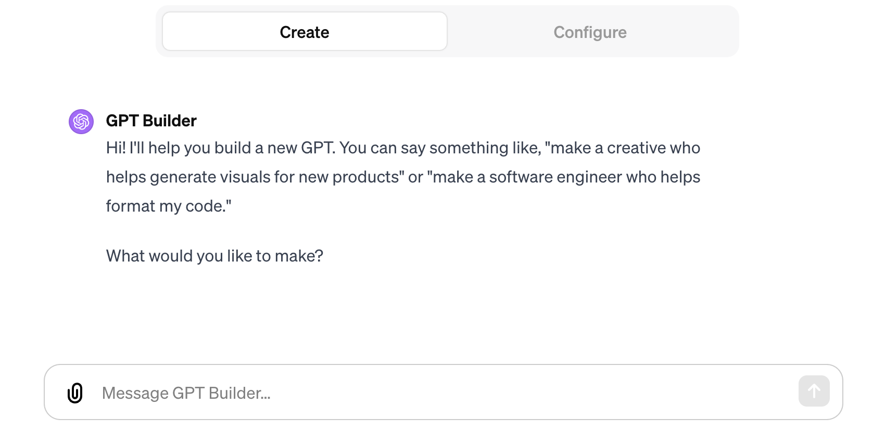

이 책에 대하여
이 전자책은 ChatGPT를 처음 접하는 초보자부터 전문적으로 활용하려는 고급 사용자까지, 다양한 수준의 독자를 위해 작성되었습니다. 특히 20대 후반의 젊은 직장인과 전문가들이 AI를 효과적으로 활용할 수 있도록 실용적인 정보와 예시를 담았습니다.
ChatGPT의 기본 기능부터 시작하여 고급 프롬프트 엔지니어링, 도구 활용, 맞춤형 GPTs 생성까지 단계별로 심화되는 내용을 통해 독자 여러분은 AI를 통한 생산성 향상과 창의적 문제 해결 역량을 키울 수 있을 것입니다.
1. ChatGPT 기초 이해하기 기초
1.1 ChatGPT란 무엇인가?
ChatGPT는 OpenAI에서 개발한 대규모 언어 모델(Large Language Model, LLM)을 기반으로 한 대화형 인공지능 챗봇입니다. GPT는 'Generative Pre-trained Transformer'의 약자로, 방대한 텍스트 데이터를 학습하여 사람과 같은 자연스러운 대화가 가능한 AI입니다.
알아두기: ChatGPT는 2022년 11월 처음 공개되었으며, 이후 지속적인 업데이트를 통해 성능이 향상되고 있습니다. 2025년 기준으로 최신 모델은 GPT-4o 시리즈입니다.
ChatGPT의 주요 특징
- 자연스러운 대화: 사람과 유사한 방식으로 대화할 수 있어 다양한 질문에 자연스럽게 응답합니다.
- 다양한 지식: 2023년까지의 학습 데이터를 바탕으로 광범위한 주제에 대한 정보를 제공합니다.
- 언어 이해력: 복잡한 질문과 지시사항을 이해하고 적절한 답변을 생성합니다.
- 창의적 작문: 에세이, 시, 스토리, 요약, 번역 등 다양한 유형의 텍스트를 생성할 수 있습니다.
- 코드 작성: 다양한 프로그래밍 언어로 코드를 작성하고 디버깅하는 데 도움을 줍니다.
1.2 ChatGPT의 버전과 차이점
ChatGPT는 여러 버전이 있으며, 각 버전마다 성능과 기능에 차이가 있습니다. 여기서는 주요 버전과 그 특징을 살펴보겠습니다.
| 모델 |
특징 |
사용 권장 상황 |
| GPT-3.5 |
무료 버전, 기본적인 대화 및 작업 수행 가능 |
일상적인 질문, 간단한 작문, 기본 정보 검색 |
| GPT-4 |
더 정확한 응답, 복잡한 작업 처리 능력 향상 |
전문적인 작업, 복잡한 문제 해결, 정교한 코딩 |
| GPT-4o |
음성, 이미지 처리 기능 통합, 더 빠른 응답 속도 |
멀티모달 작업, 실시간 대화, 이미지 분석 필요 시 |
| GPT-4o mini |
GPT-4o의 경량화 버전, 빠른 속도와 합리적 성능 |
일상적인 작업에서 더 빠른 응답이 필요할 때 |
팁: ChatGPT Plus 구독 서비스($20/월)를 이용하면 최신 모델과 추가 기능(GPTs, 플러그인 등)을 사용할 수 있으며, 사용량 제한도 더 높습니다.
1.3 ChatGPT의 한계 이해하기
ChatGPT는 강력한 AI 도구이지만, 몇 가지 중요한 한계가 있습니다. 효과적으로 활용하기 위해서는 이러한 한계를 이해하는 것이 중요합니다.
- 제한된 학습 데이터: ChatGPT는 학습 데이터 시점(2023년) 이후의 정보는 알지 못합니다. 최신 정보는 검색 도구를 통해 보완해야 합니다.
- 환각(Hallucination): 때때로 실제로 존재하지 않는 정보를 사실처럼 제시할 수 있습니다. 중요한 정보는 항상 검증이 필요합니다.
- 맥락 이해의 한계: 대화 맥락을 완벽하게 이해하지 못할 수 있으며, 특히 긴 대화에서는 이전 내용을 잊을 수 있습니다.
- 편향 가능성: 학습 데이터에 존재하는 편향이 응답에 반영될 수 있습니다.
- 전문성 한계: 전문 분야의 깊이 있는 지식은 제한적일 수 있으며, 복잡한 전문 영역에서는 참고용으로만 활용해야 합니다.
주의: ChatGPT는 법률, 의료, 재정 등의 전문적인 조언을 제공할 수 없습니다. 중요한 결정에는 반드시 관련 분야 전문가의 상담을 받으세요.
2. ChatGPT 시작하기 기초
2.1 계정 생성 및 로그인
ChatGPT를 사용하기 위해서는 OpenAI 계정이 필요합니다. 계정 생성 과정은 간단하며, 이메일 주소를 통해 무료로 가입할 수 있습니다.
- ChatGPT 웹사이트 방문
웹 브라우저에서 https://chat.openai.com에 접속합니다.
- 계정 만들기
'Sign up' 버튼을 클릭하여 계정 생성 페이지로 이동합니다.
- 이메일 주소 입력
사용할 이메일 주소를 입력하고 비밀번호를 설정합니다. 또는 Google, Microsoft, Apple 계정으로 간편 로그인도 가능합니다.
- 인증 및 확인
이메일로 전송된 인증 링크를 클릭하여 계정을 활성화합니다.
- 로그인
계정 활성화 후 로그인하여 ChatGPT를 사용할 수 있습니다.
팁: 모바일 기기에서도 웹 브라우저를 통해 ChatGPT에 접속할 수 있으며, iOS와 Android용 공식 앱도 제공됩니다.
2.2 인터페이스 살펴보기
ChatGPT의 인터페이스는 직관적이고 사용하기 쉽게 설계되어 있습니다. 주요 구성 요소를 살펴보겠습니다.
메인 화면 구성
- 사이드바(왼쪽): 새 채팅 시작, 이전 대화 기록 확인, 설정 접근 등을 할 수 있습니다.
- 대화 영역(중앙): 주요 대화가 이루어지는 공간으로, 질문과 답변이 표시됩니다.
- 입력창(하단): 질문이나 지시를 입력하는 텍스트 필드입니다.
- 모델 선택(상단): 사용할 ChatGPT 모델을 선택할 수 있습니다(GPT-3.5, GPT-4 등).
- 도구 버튼(입력창 옆): 이미지 업로드, 파일 첨부 등 추가 기능을 사용할 수 있습니다.
주요 기능 버튼
- + New chat: 새로운 대화를 시작합니다.
- History: 이전 대화 기록을 볼 수 있습니다.
- Settings: 계정 설정, 데이터 관리, 테마 변경 등을 할 수 있습니다.
- GPTs: 사용자 정의 GPT 모델을 생성하거나 사용할 수 있습니다.
- Submit 버튼: 입력한 프롬프트를 전송합니다(Enter 키로도 가능).
알아두기: 모바일 버전에서는 인터페이스가 약간 다를 수 있지만 기본 기능은 동일합니다. 사이드바는 햄버거 메뉴(≡)를 통해 접근할 수 있습니다.
2.3 첫 대화 시작하기
ChatGPT와의 첫 대화를 시작하는 방법은 간단합니다. 텍스트 입력창에 질문이나 지시를 입력하고 전송하면 됩니다.
기본적인 대화 예시
사용자: 안녕하세요, ChatGPT! 오늘 날씨가 어때요?
ChatGPT: 안녕하세요! 저는 인터넷에 직접 연결되어 있지 않아 실시간 날씨 정보를 확인할 수 없습니다. 하지만 오늘 날씨가 궁금하시다면, 현재 계신 지역의 날씨 앱을 확인하시거나 검색 기능을 사용해보시는 것이 좋을 것 같습니다. 다른 질문이 있으시면 언제든지 도움드리겠습니다!
간단한 정보 질문하기
사용자: 태양계의 행성들을 순서대로 알려주세요.
ChatGPT: 태양계의 행성들을 태양으로부터의 거리 순서대로 나열하면 다음과 같습니다:
1. 수성(Mercury)
2. 금성(Venus)
3. 지구(Earth)
4. 화성(Mars)
5. 목성(Jupiter)
6. 토성(Saturn)
7. 천왕성(Uranus)
8. 해왕성(Neptune)
참고로 과거에는 명왕성(Pluto)도 행성으로 분류되었으나, 2006년 국제천문연맹(IAU)에 의해 왜행성(dwarf planet)으로 재분류되었습니다.
팁: 처음 사용할 때는 간단한 질문으로 시작하여 ChatGPT의 응답 방식을 파악한 후, 점차 더 복잡한 질문이나 작업으로 확장해 나가는 것이 좋습니다.
대화의 흐름 유지하기
ChatGPT는 대화 맥락을 기억할 수 있어, 이전 질문과 연관된 후속 질문을 할 수 있습니다.
사용자: 태양계에서 가장 큰 행성은 무엇인가요?
ChatGPT: 태양계에서 가장 큰 행성은 목성(Jupiter)입니다. 목성은 태양계의 다른 모든 행성들을 합친 것보다도 2.5배 더 많은 질량을 가지고 있습니다. 지구와 비교하면 약 318배의 질량과 약 11배의 지름을 갖고 있는 거대한 가스 행성입니다.
사용자: 그 행성의 위성은 몇 개나 있나요?
ChatGPT: 목성은 현재까지 발견된 위성이 79개로 알려져 있습니다. 이 중 가장 큰 4개의 위성은 '갈릴레오 위성'으로, 갈릴레오 갈릴레이가 1610년에 처음 발견했습니다. 이 4개의 위성은 이오(Io), 유로파(Europa), 가니메데(Ganymede), 칼리스토(Callisto)입니다. 특히 가니메데는 태양계에서 가장 큰 위성으로, 수성보다도 크기가 큽니다.
3. 프롬프트 엔지니어링 기초 중급
3.1 프롬프트 엔지니어링이란?
프롬프트 엔지니어링은 AI 모델로부터 원하는 결과를 얻기 위해 입력(프롬프트)을 효과적으로 설계하는 과정입니다. 적절한 프롬프트를 작성함으로써 ChatGPT의 응답 품질과 정확도를 크게 향상시킬 수 있습니다.
프롬프트 엔지니어링의 중요성
- 정확한 응답 유도: 명확한 지시를 통해 AI가 원하는 정보를 제공하도록 합니다.
- 시간 절약: 효과적인 프롬프트로 여러 번의 질문-답변 과정을 줄일 수 있습니다.
- 높은 품질의 결과물: 잘 설계된 프롬프트는 더 자세하고 유용한 응답을 이끌어냅니다.
- 복잡한 작업 수행: 적절한 프롬프트를 통해 AI가 복잡한 문제를 단계적으로 해결할 수 있도록 안내합니다.
알아두기: 프롬프트 엔지니어링은 단순한 질문 작성이 아닌, AI와의 효과적인 '대화 설계'라고 생각하면 이해하기 쉽습니다.
3.2 효과적인 프롬프트 작성법
효과적인 프롬프트를 작성하기 위한 핵심 원칙들을 살펴보겠습니다.
명확성과 구체성
❌ 비효율적인 프롬프트
"마케팅에 대해 알려줘."
✅ 효율적인 프롬프트
"소규모 온라인 의류 쇼핑몰을 위한 인스타그램 마케팅 전략 5가지를 예산별로 분류해서 설명해줘."
맥락 제공하기
❌ 비효율적인 프롬프트
"이 코드의 문제가 뭐야?"
✅ 효율적인 프롬프트
"나는 파이썬 초보자인데, 아래 코드를 실행했을 때 'IndexError: list index out of range' 오류가 발생해. 코드의 문제가 무엇이고 어떻게 수정해야 하는지 설명해줘. [코드 삽입]"
출력 형식 지정하기
❌ 비효율적인 프롬프트
"주식 투자에 대한 조언을 줘."
✅ 효율적인 프롬프트
"장기 주식 투자를 시작하려는 20대 직장인을 위한 조언을 다음 형식으로 제공해줘: 1) 시작 전 알아야 할 기본 지식 3가지, 2) 초보자가 범하기 쉬운 실수 3가지, 3) 추천 투자 방법론 2가지. 각 항목마다 짧은 설명을 포함해줘."
역할 부여하기
❌ 비효율적인 프롬프트
"영어 이메일 작성을 도와줘."
✅ 효율적인 프롬프트
"당신은 경험 많은 영어 이메일 전문가입니다. 해외 협력사에 제품 배송이 지연된다는 내용의 정중한 이메일을 작성해주세요. 배송 지연 이유는 자연재해로 인한 물류 문제이고, 예상 배송일은 2주 후입니다. 정중하면서도 전문적인 어조로 작성해주세요."
팁: 영어로 프롬프트를 작성하면 ChatGPT가 더 정확한 응답을 제공하는 경우가 많습니다. 중요한 작업에는 영어 프롬프트를, 그 결과를 한국어로 출력해달라고 요청하는 방법도 효과적입니다.
3.3 프롬프트 템플릿과 패턴
다양한 상황에서 활용할 수 있는 프롬프트 템플릿과 효과적인 패턴을 알아봅시다.
CRISPE 프롬프트 패턴
CRISPE는 효과적인 프롬프트를 작성하기 위한 프레임워크로, 다음 요소들로 구성됩니다:
- Capacity and Role (역량과 역할): AI에게 특정 역할이나 전문성을 부여합니다.
- Insight (통찰): 원하는 통찰력의 깊이나 관점을 지정합니다.
- Statement (명세): 명확한 요청이나 질문을 제시합니다.
- Personality (성격): 응답의 어조나 스타일을 지정합니다.
- Experiment (실험): 여러 대안이나 다양한 관점을 요청합니다.
CRISPE 패턴 예시:
"당신은 10년 경력의 UX 디자인 전문가입니다(역할). 사용자 중심 디자인의 최신 트렌드와 연구 결과를 기반으로(통찰) 모바일 금융 앱의 사용자 경험을 개선하기 위한 5가지 핵심 전략을 제시해주세요(명세). 실용적이고 구체적인 조언을 제공해주세요(성격). 각 전략에 대해 장단점을 함께 설명하고, 구현 난이도를 '쉬움', '보통', '어려움'으로 분류해주세요(실험)."
페르소나 패턴
특정 역할이나 전문가의 관점에서 답변을 요청하는 패턴입니다.
페르소나 패턴 예시:
"당신은 20년 경력의 재무 상담사입니다. 30대 초반의 신혼부부가 주택 구입을 위해 저축하려고 합니다. 월 소득은 600만원이고, 현재 부채는 없으며, 결혼 자금으로 3,000만원이 남아있습니다. 이들에게 효과적인 저축 및 투자 전략을 제안해주시고, 주택 구입 시기와 방법에 대한 조언도 해주세요."
레시피 패턴
단계별 가이드나 절차를 요청할 때 유용한 패턴입니다.
레시피 패턴 예시:
"프리랜서 웹 개발자로 커리어를 시작하려고 합니다. 1) 필요한 기술과 스킬, 2) 포트폴리오 구성 방법, 3) 클라이언트 찾는 방법, 4) 가격 책정 전략, 5) 계약 및 법적 고려사항에 대한 단계별 가이드를 제공해주세요. 각 단계마다 실행 가능한 구체적인 조언을 포함해주세요."
반전 상호작용 패턴
AI가 사용자에게 질문을 던져 필요한 정보를 수집한 후 응답하는 패턴입니다.
반전 상호작용 패턴 예시:
"나는 개인 블로그를 시작하려고 합니다. 블로그 플랫폼 선택부터 콘텐츠 전략까지 도움이 필요해요. 당신이 블로그 컨설턴트라고 가정하고, 내게 필요한 정보를 파악하기 위한 질문을 먼저 해주세요. 그 후 맞춤형 블로그 시작 전략을 제안해주세요."
팁: 이러한 패턴들은 필요에 따라 조합하여 사용할 수 있습니다. 예를 들어, 페르소나 패턴과 레시피 패턴을 함께 사용하면 전문가의 관점에서 단계별 가이드를 얻을 수 있습니다.
3.4 프롬프트 최적화 및 문제 해결
처음부터 완벽한 프롬프트를 작성하기는 어렵습니다. 프롬프트 최적화와 일반적인 문제 해결 방법을 알아봅시다.
반복적 개선
원하는 결과를 얻지 못했다면, 프롬프트를 수정하고 다시 시도해보세요:
- 구체성 추가: "더 자세히 설명해줄래?", "이 부분을 더 구체적으로 알려줘."
- 맥락 보완: "추가 정보로, 내가 이것을 원하는 이유는..."
- 형식 재정의: "이 정보를 표 형태로 정리해줄래?"
일반적인 문제와 해결책
| 문제 |
해결 방법 |
| 너무 긴 응답 |
"간결하게 핵심만 알려줘" 또는 "100단어 이내로 요약해줘"와 같은 제약 추가 |
| 너무 짧은 응답 |
"상세하게 설명해줘" 또는 "각 항목에 대해 최소 3문장으로 설명해줘" 요청 |
| 잘못된 형식 |
원하는 출력 형식의 예시를 제공하거나 명확한 형식 지정 |
| 응답 거부 |
목적과 맥락을 명확히 설명하거나, 합법적이고 윤리적인 방향으로 질문 재구성 |
| 관련 없는 응답 |
질문의 초점을 좁히고 구체적인 맥락 제공 |
후속 질문 활용하기
첫 번째 응답을 기반으로 추가 질문을 통해 결과를 개선할 수 있습니다:
- 명확화 요청: "방금 언급한 두 번째 전략에 대해 더 자세히 설명해줄래?"
- 대안 요청: "방금 제안한 방법 말고 다른 접근법도 있을까?"
- 예시 요청: "이론적 설명은 이해했어. 실제 적용 사례를 몇 가지 들어줄래?"
- 비판적 분석: "방금 제안한 전략의 잠재적 약점이나 위험 요소는 무엇일까?"
주의: ChatGPT는 이전 대화 내용을 기억하지만, 너무 긴 대화에서는 맥락을 잃을 수 있습니다. 중요한 정보는 후속 질문에서도 반복해서 언급하는 것이 좋습니다.
4. 실용적인 ChatGPT 활용법 중급
4.1 글쓰기와 콘텐츠 생성
ChatGPT는 다양한 형태의 텍스트를 생성하고 편집하는 데 뛰어난 능력을 보여줍니다. 글쓰기 과정에서 ChatGPT를 활용하는 방법을 알아봅시다.
다양한 글쓰기 형식
- 블로그 글 작성: 특정 주제에 대한 블로그 포스트 초안 생성
- 이메일 작성: 공식 이메일, 거절 메일, 감사 메일 등 상황별 이메일 작성
- 소셜 미디어 콘텐츠: 인스타그램 캡션, 트위터 스레드, 페이스북 포스트 등 작성
- 보고서 및 문서: 학술 리포트, 비즈니스 보고서, 제안서 등 작성
- 창작 글쓰기: 시, 소설, 대본, 스토리 플롯 등 창작물 생성
블로그 글 작성 프롬프트 예시:
"디지털 디톡스에 관한 블로그 글을 작성해줘. 다음 내용을 포함해줘: 1) 디지털 디톡스의 정의와 필요성, 2) 디지털 기기 사용의 부정적 영향 3가지, 3) 일상에서 실천할 수 있는 디지털 디톡스 방법 5가지, 4) 성공적인 디지털 디톡스 사례. 타겟 독자는 20-30대 직장인이고, 전문적이면서도 친근한 어조로 작성해줘. 제목과 소제목도 포함해줘."
기존 텍스트 개선
이미 작성된 텍스트를 개선하는 데에도 ChatGPT를 활용할 수 있습니다:
- 문법 및 맞춤법 교정: 텍스트의 문법적 오류 수정
- 재작성 및 패러프레이징: 기존 텍스트를 다른 문체나 어조로 변경
- 내용 확장: 간략한 메모나 개요를 완전한 텍스트로 확장
- 간결화 및 요약: 긴 텍스트를 핵심만 남겨 요약
- 톤 변경: 공식적인 글을 비공식적으로 또는 그 반대로 변경
텍스트 개선 프롬프트 예시:
"다음 텍스트는 내가 작성한 자기소개서의 첫 문단이야. 더 설득력 있고 생동감 있게 개선해줘. 구체적인 예시나 수치를 추가하고, 클리셰 표현은 피해줘. 원래 텍스트의 의도와 핵심 내용은 유지하면서 더 전문적인 어조로 다듬어줘:
[텍스트 삽입]"
팁: ChatGPT가 생성한 콘텐츠는 항상 사실 확인과 편집이 필요합니다. 특히 전문 분야나 최신 정보가 필요한 콘텐츠는 추가 검증이 중요합니다. 또한, 생성된 콘텐츠를 자신의 스타일로 수정하여 독창성을 유지하세요.
4.2 학습과 교육
ChatGPT는 개인 학습과 교육 분야에서 강력한 도구로 활용될 수 있습니다.
개인 학습 도우미
- 개념 설명: 복잡한 개념을 쉽게 이해할 수 있도록 설명 요청
- 문제 해결: 수학, 과학 등의 문제 풀이 과정 안내
- 요약 및 정리: 학습 자료나 강의 내용을 요약하여 핵심 포인트 파악
- 퀴즈 생성: 학습한 내용을 테스트할 수 있는 퀴즈 제작
- 언어 학습: 외국어 표현, 문법 설명, 대화 연습 등
개념 설명 프롬프트 예시:
"양자 얽힘(quantum entanglement)이란 무엇인지 고등학생이 이해할 수 있는 수준으로 설명해줘. 일상적인 비유와 예시를 포함해서 단계적으로 설명해줘."
교육자를 위한 도구
- 수업 계획: 특정 주제나 개념에 대한 수업 계획 작성
- 학습 자료 생성: 워크시트, 읽기 자료, 연습 문제 등 제작
- 평가 도구: 시험 문제, 루브릭, 평가 기준 등 개발
- 다양한 설명 방식: 같은 개념을 다양한 방식으로 설명하여 맞춤형 학습 지원
- 피드백 작성: 학생 과제에 대한 건설적인 피드백 초안 작성
수업 계획 프롬프트 예시:
"고등학교 2학년을 대상으로 한 '기후변화와 지구 환경' 주제의 45분 수업 계획을 작성해줘. 도입, 본 활동, 마무리 활동으로 구성하고, 학생 참여를 유도하는 활동과 토론 질문을 포함해줘. 필요한 자료와 준비물도 명시해줘."
주의: ChatGPT는 학습 보조 도구로 활용하되, 과제나 시험의 직접적인 대체제로 사용하는 것은 학문적 부정행위가 될 수 있습니다. 교육 기관의 AI 사용 정책을 확인하고 윤리적으로 활용하세요.
4.3 코딩과 프로그래밍
ChatGPT는 프로그래밍과 개발 작업을 지원하는 강력한 도구로 활용될 수 있습니다.
코드 생성 및 수정
- 코드 작성: 특정 기능이나 알고리즘을 구현하는 코드 생성
- 버그 수정: 오류가 있는 코드의 문제점 파악 및 수정
- 코드 최적화: 기존 코드의 성능이나 가독성 개선
- 리팩토링: 코드 구조 개선을 위한 리팩토링 방안 제시
- 언어 변환: 한 프로그래밍 언어에서 다른 언어로 코드 변환
코드 작성 프롬프트 예시:
"파이썬으로 웹 스크래핑 프로그램을 작성해줘. 특정 웹사이트의 뉴스 헤드라인과 요약을 수집하여 CSV 파일로 저장하는 기능이 필요해. requests와 BeautifulSoup 라이브러리를 사용하고, 예외 처리와 주석을 포함해줘."
개발 학습 및 문제 해결
- 개념 설명: 프로그래밍 개념이나 패턴에 대한 설명 요청
- 코드 분석: 복잡한 코드의 작동 방식 이해
- 디버깅 지원: 오류 메시지 분석 및 해결 방안 제시
- 알고리즘 설계: 특정 문제를 해결하기 위한 알고리즘 설계
- 학습 로드맵: 특정 프로그래밍 언어나 기술 학습을 위한 로드맵 제공
디버깅 지원 프롬프트 예시:
"다음 자바스크립트 코드에서 'TypeError: Cannot read property 'length' of undefined' 오류가 발생하고 있어. 문제가 무엇인지 분석하고 해결 방법을 제시해줘:
```javascript
function processData(data) {
const results = [];
for (let i = 0; i < data.items.length; i++) {
results.push(data.items[i].name);
}
return results;
}
const response = fetchData();
const names = processData(response);
console.log(names);
```"
알아두기: ChatGPT는 2021년까지의 프로그래밍 지식을 가지고 있어 최신 라이브러리나 프레임워크 버전에 대한 정보는 제한적일 수 있습니다. 또한, 생성된 코드는 항상 테스트가 필요하며, 보안 취약점이 있을 수 있으므로 주의가 필요합니다.
4.4 비즈니스 및 직장 활용
ChatGPT는 비즈니스 환경에서 다양한 작업을 효율적으로 처리하는 데 도움을 줄 수 있습니다.
문서 및 커뮤니케이션
- 비즈니스 이메일: 상황별 전문적인 이메일 작성
- 보고서 작성: 데이터 분석 보고서, 주간/월간 업무 보고서 등 작성
- 제안서 및 계획서: 비즈니스 제안서, 프로젝트 계획서 등 작성
- 회의록: 회의 내용 요약 및 정리
- 프레젠테이션 자료: 발표 자료 구성 및 스크립트 작성
비즈니스 이메일 프롬프트 예시:
"해외 클라이언트에게 프로젝트 지연에 대한 양해를 구하는 이메일을 작성해줘. 지연 이유는 주요 개발자의 갑작스러운 건강 문제이고, 예상 완료일은 2주 후로 연기되었음. 프로페셔널하면서도 공감을 표현하는 어조로, 영문 이메일을 작성해줘."
아이디어 발상 및 전략 수립
- 브레인스토밍: 특정 문제나 기회에 대한 아이디어 생성
- 시장 조사: 산업 트렌드, 경쟁 분석 등의 정보 정리
- 마케팅 전략: 제품, 서비스에 대한 마케팅 접근 방식 제안
- SWOT 분석: 비즈니스, 제품, 서비스의 강점, 약점, 기회, 위협 분석
- 의사결정 지원: 다양한 선택지의 장단점 분석
브레인스토밍 프롬프트 예시:
"우리는 20-30대 직장인을 대상으로 한 구독형 건강식품 서비스를 런칭하려고 해. 바쁜 직장인들이 건강한 식습관을 유지할 수 있도록 돕는 서비스의 차별화 포인트가 될 만한 아이디어 10가지를 제안해줘. 각 아이디어에 대해 간략한 설명과 기대 효과도 함께 작성해줘."
데이터 분석 및 정리
- 데이터 해석: 통계, 수치, 트렌드에 대한 분석 및 인사이트 도출
- 포맷 변환: 비구조화된 데이터를 구조화된 형식으로 변환
- 데이터 시각화 계획: 효과적인 데이터 시각화 방법 제안
- 분석 쿼리 작성: SQL 쿼리나 데이터 처리 스크립트 작성
- 보고서 자동화: 데이터 분석 결과를 보고서 형태로 자동 정리
팁: 비즈니스 문서 작성 시 회사의 톤앤매너와 스타일 가이드를 ChatGPT에 알려주면, 회사 문화에 맞는 콘텐츠를 생성할 수 있습니다. 예를 들어, "우리 회사는 공식적이지만 친근한 어조를 사용하며, 전문 용어는 최소화하고 명확한 액션 아이템을 강조합니다"와 같은 정보를 제공하세요.
5. 고급 프롬프트 엔지니어링 고급
5.1 프롬프트 체이닝
프롬프트 체이닝은 복잡한 작업을 여러 단계로 나누어 순차적으로 처리하는 고급 기법입니다. 이 방법은 큰 문제를 작은 하위 작업으로 분해하여 각 단계에서 최적의, 결과물을 얻을 수 있게 해줍니다.
체이닝의 주요 원칙
- 단계적 분해: 복잡한 작업을 논리적 순서로 배열된 작은 단계로 나눕니다.
- 이전 출력 활용: 각 단계에서 이전 단계의 결과물을 입력으로 사용합니다.
- 점진적 개선: 각 단계에서 결과물을 점검하고 필요시 수정하며 진행합니다.
- 맥락 유지: 전체 작업의 목표와 맥락을 유지하면서 진행합니다.
체이닝 예시: 비즈니스 제안서 작성
1단계: 아이디어 브레인스토밍
"지속가능한 패션 브랜드를 위한 디지털 마케팅 전략 아이디어를 10가지 브레인스토밍해줘. 각 아이디어는 간략하게 1-2문장으로 설명해줘."
[ChatGPT 응답 - 10가지 아이디어 목록]
2단계: 아이디어 선별 및 발전
"위 아이디어 중에서 1, 3, 7번을 더 발전시켜보자. 각 아이디어별로 구체적인 실행 방안, 필요한 리소스, 예상되는 효과를 설명해줘."
[ChatGPT 응답 - 선별된 아이디어의 상세 계획]
3단계: 제안서 구조 작성
"이제 위 내용을 바탕으로 디지털 마케팅 제안서의 구조를 작성해줘. 목차 형식으로, 각 섹션에 포함될 주요 내용을 간략히 설명해줘."
[ChatGPT 응답 - 제안서 구조]
4단계: 섹션별 콘텐츠 작성
"이제 제안서의 '시장 분석' 섹션을 자세히 작성해줘. 지속가능한 패션 시장의 현재 트렌드, 타겟 고객 분석, 주요 경쟁사 분석을 포함해줘."
[ChatGPT 응답 - 시장 분석 섹션]
5단계: 최종 검토 및 개선
"작성된 시장 분석 섹션을 검토하고, 더 설득력 있게 개선해줘. 구체적인 통계나 사례를 추가하고, 시각적 요소(차트, 그래프 등)를 위한, 제안도 포함해줘."
[ChatGPT 응답 - 개선된 최종 섹션]
팁: 복잡한 프로젝트에서는 작업 계획 자체를 ChatGPT에 요청할 수 있습니다. "A를 달성하기 위해 필요한 단계를 순서대로 알려줘"와 같은 프롬프트로 체이닝 계획을 세우는 것이 효과적입니다.
5.2 다중 페르소나 접근법
다중 페르소나 접근법은 여러 관점에서 문제를 분석하거나 평가하기 위해 다양한 역할이나 전문가의 시각을 활용하는 기법입니다. 이를 통해 더 균형 잡히고 창의적인 결과물을 얻을 수 있습니다.
다중 페르소나의 유형
- 전문가 패널: 다양한 분야의 전문가 역할을 요청하여 종합적인 분석 얻기
- 디베이트 형식: 서로 다른 관점을 가진 페르소나 간의 토론 구성
- 순차적 분석: 동일한 문제를 다른 페르소나가 순차적으로 분석
- 6색 사고모자: 에드워드 드보노의 6가지 사고 방식을 활용한 다각적 분석
다중 페르소나 예시: 신제품 평가
다중 페르소나 프롬프트 예시:
"스마트워치 형태의 건강 모니터링 기기 아이디어를 평가해줘. 다음 5가지 페르소나의 관점에서 각각 분석해줘:
1. 마케팅 전문가: 시장성과 타겟 고객 분석
2. 제품 엔지니어: 기술적 실현 가능성과 개발 과제
3. 헬스케어 전문가: 의학적 정확성과 유용성
4. 사용자 경험 디자이너: 사용성과 디자인 측면
5. 재무 분석가: 비용 구조와 수익 모델
각 페르소나별로 주요 장단점을 3가지씩 제시하고, 최종적으로 이 제품 아이디어에 대한 종합 평가와 개선 방향을 제안해줘."
6색 사고모자 기법 활용
에드워드 드보노의 6색 사고모자 기법을 활용하면 문제를 다각도로 분석할 수 있습니다:
- 흰색 모자(정보와 사실): 객관적 데이터와 사실에 집중
- 빨간색 모자(감정과 직감): 감정과 직관적 반응에 집중
- 검은색 모자(비판적 판단): 위험요소와 단점 파악
- 노란색 모자(긍정적 사고): 이점과 가치에 집중
- 녹색 모자(창의적 사고): 새로운 아이디어와 가능성 탐색
- 파란색 모자(사고 과정): 전체 과정을 조직화하고 요약
6색 사고모자 프롬프트 예시:
"우리 회사가 재택근무 정책을 도입하는 것에 대해 6색 사고모자 기법을 사용하여 분석해줘. 각 색깔의 모자별로 관점을 명확히 구분하고, 각각의 관점에서 핵심 포인트를 3-4개씩 제시해줘. 마지막에는 파란색 모자로 전체 분석을 종합하고 의사결정을 위한 프레임워크를 제안해줘."
주의: 다중 페르소나 접근법은 토큰 사용량이 많을 수 있습니다. 모든 페르소나를 한 번에 요청하기보다, 중요한 2-3개의 페르소나로 시작한 후 필요한 경우 추가하는 것이, 효율적일 수 있습니다.
5.3 제로샷 체인오브소트 (Chain-of-Thought)
제로샷 체인오브소트는 AI가 답변에 이르는 사고 과정을 단계적으로 보여주도록 요청하는 기법입니다. 이를 통해 더 정확하고 추적 가능한 결과를 얻을 수 있습니다.
체인오브소트의 장점
- 정확성 향상: 단계적 사고를 통해 오류 가능성 감소
- 투명성 확보: AI의 추론 과정을 명확히 확인 가능
- 학습 촉진: 문제 해결 방법을 단계별로 학습 가능
- 복잡한 문제 해결: 다단계 추론이 필요한 문제에 효과적
체인오브소트 프롬프트 작성법
효과적인 체인오브소트 프롬프트는 다음과 같은 요소를 포함합니다:
- "단계별로 생각해봐": AI에게 사고 과정을 요청하는 명시적 지시
- "천천히 하나씩 분석해줘": 체계적 분석을 유도하는 표현
- "먼저 문제를 이해하고, 그다음에...": 단계를 구체적으로 안내
- "최종 결론에 도달하기 전에 모든 가능성을 고려해봐": 종합적 분석 요청
체인오브소트 프롬프트 예시 (수학 문제):
"다음 확률 문제를 단계별로 풀어줘. 각 단계에서 무엇을 계산하는지 설명하고, 중간 계산 결과도 보여줘.
문제: 상자 A에는 빨간 공 3개와 파란 공 2개가 있고, 상자 B에는 빨간 공 1개와 파란 공 4개가 있다. 무작위로 한 상자를 선택한 후, 그 상자에서 무작위로 공을 하나 꺼냈을 때 그 공이 빨간색일 확률은?"
체인오브소트 프롬프트 예시 (비즈니스 의사결정):
"우리 회사는 새로운 시장 진출을 고려하고 있다. A국가와 B국가 중 어느 곳이 더 적합한지 결정해야 한다. 다음 데이터를 기반으로 단계별로 분석하고 최종 권장 사항을 제시해줘. 각 분석 단계와 사고 과정을 명확히 보여줘.
A국가: 인구 5천만, GDP 성장률 3%, 경쟁사 2개, 규제 장벽 높음, 초기 투자 비용 500만 달러
B국가: 인구 3천만, GDP 성장률 5%, 경쟁사 5개, 규제 장벽 낮음, 초기 투자 비용 700만 달러"
팁: 체인오브소트는 단순한 질문보다는 복잡한 분석, 수학 문제, 논리적 추론이 필요한 상황에서 가장 효과적입니다. 단계별 사고를 통해 학습하려는 경우에도 유용하게 활용할 수 있습니다.
5.4 고급 발전 기법
더 복잡한 작업과 고품질 결과물을 위한 고급 프롬프트 엔지니어링 기법들을 살펴보겠습니다.
컨텍스트 윈도우 최적화
ChatGPT는 제한된 컨텍스트 윈도우(대화 기억 범위)를 가지고 있어, 긴 대화에서는 초기 내용을 기억하지 못할 수 있습니다. 이를 최적화하는 방법:
- 요약 및 참조: "지금까지 우리가 논의한 핵심 포인트는 X, Y, Z였어. 이를 바탕으로..."
- 중요 정보 반복: 중요한 제약조건이나 요구사항을 정기적으로 상기시키기
- 새 대화 시작: 필요시 이전 결과를 요약하여 새 대화 시작하기
- 분할 접근: 큰 주제를 관리 가능한 하위 주제로 나누어 처리하기
자기 반성 프롬프팅
ChatGPT에게 자신의 응답을 평가하고 개선하도록 요청하는 기법입니다.
자기 반성 프롬프팅 예시:
"마케팅 전략 제안서를 작성해줘. 작성 후에는 다음 기준으로 자체 평가를 해줘: 1) 창의성, 2) 실행 가능성, 3) 예상 효과, 4) 비용 효율성. 각 기준에 대해 1-10점으로 평가하고, 개선할 수 있는 부분을 구체적으로 제안해. 그런 다음 자체 평가를 바탕으로 개선된 최종 버전을 제시해줘."
지시적 미세조정
응답의 특정 측면을 미세하게 조정하기 위한 지시사항을 포함하는 기법입니다.
지시적 미세조정 예시:
"인공지능의 윤리적 측면에 대한 에세이를 작성해줘. 다음 지침을 따라줘:
- 전반적 톤: 학술적이지만 접근하기 쉬운 어조 사용
- 문장 길이: 짧은 문장과 긴 문장을 번갈아 사용하여 리듬감 유지
- 전문 용어: 첫 언급 시 반드시 정의를 포함
- 구조: 일반적인 원칙에서 구체적인 사례로 전개
- 결론: 개방형 질문으로 마무리하여 독자의 사고 촉진"
메타인지적 프롬프팅
ChatGPT에게 자신의 사고 과정을 설명하거나 다양한 인지적 전략을 적용하도록 요청하는 기법입니다.
메타인지적 프롬프팅 예시:
"기후 변화 대응 정책에 대한 분석을 해줘. 다음과 같은 메타인지적 접근을 사용해줘:
1. 먼저 직관적인 첫 분석을 제시해.
2. 그 다음, 첫 분석에서 간과했을 수 있는 중요한 측면들을 파악해.
3. 첫 분석과 추가 고려사항을 통합하여 더 균형 잡힌 분석을 해.
4. 마지막으로, 어떤 가정이나 편향이 이 분석에 영향을 미쳤는지 성찰해."
알아두기: 이러한 고급 기법들은 상황에 따라 결합하여 사용할 수 있습니다. 예를 들어, 체인오브소트와 자기 반성 프롬프팅을 결합하면 AI가 단계별 사고 과정을 보여주고, 그 과정을 스스로 평가하여 더 정교한 결과를 얻을 수 있습니다.
6. ChatGPT 도구와 확장 기능 고급
6.1 ChatGPT 내장 도구
ChatGPT에는 다양한 내장 도구들이 있어 기본 텍스트 생성 외에도 다양한 작업을 수행할 수 있습니다. 특히 GPT-4 모델에서는 더 많은 도구를 사용할 수 있습니다.
검색 기능 (Browse with Bing)
ChatGPT Plus 구독자는 Bing 검색 기능을 통해 최신 정보에 접근할 수 있습니다.
- 최신 정보 접근: 학습 데이터 이후의 정보 검색 가능
- 실시간 데이터: 뉴스, 시장 데이터, 이벤트 정보 등 확인
- 사실 확인: 응답의 정확성 향상을 위한 정보 검증
검색 기능 활용 프롬프트 예시:
"2025년 현재 한국의 부동산 시장 동향과 전망에 대해 최신 정보를 검색해서 알려줘. 주택 가격 추이, 정부 정책 변화, 전문가들의 전망을 포함해줘."
ChatGPT (검색 후): 현재 2025년 한국 부동산 시장은 [검색된 최신 동향 요약]... 정부는 [관련 정책]을 발표했으며, 전문가들은 [주요 전망]을 내놓고 있습니다. 더 자세한 분석이 필요하시면 특정 지역이나 관점을 알려주세요.
DALL-E 이미지 생성
ChatGPT는 OpenAI의 DALL-E 모델을 통해 텍스트 설명을 기반으로 이미지를 생성할 수 있습니다.
- 상세 프롬프트: 구체적인 설명으로 원하는 이미지 생성
- 스타일 지정: 특정 예술 스타일이나 시각적 효과 적용
- 다양한 목적: 콘텐츠 제작, 아이디어 시각화, 디자인 영감 등
DALL-E 이미지 생성 프롬프트 예시:
"미래적인 스마트 도시의 모습을 보여주는 이미지를 생성해줘. 친환경 건물, 자율 주행 차량, 드론 배송 시스템이 보이고, 도시 전체가 푸른 빛으로 빛나는 모습이었으면 좋겠어. 스타일은 사실적인 3D 렌더링 느낌으로."
데이터 분석과 시각화
ChatGPT는 데이터 처리와 분석, 시각화 코드 생성이 가능합니다.
- 데이터 분석 코드: Python, R 등을 활용한 데이터 분석 코드 생성
- 시각화 스크립트: 차트, 그래프 생성을 위한 코드 작성
- 데이터 해석: 통계 결과 해석 및 인사이트 추출
데이터 분석 프롬프트 예시:
"다음 월별 판매 데이터를 분석하고 시각화하는 Python 코드를 작성해줘. Pandas와 Matplotlib을 사용해서 1) 월별 판매 추이 선 그래프, 2) 제품별 판매 비중 파이 차트, 3) 판매량과 수익의 상관관계 산점도를 생성해줘. 데이터는 다음과 같아:
Month, Product_A, Product_B, Product_C
Jan, 120, 80, 30
Feb, 110, 90, 40
Mar, 130, 85, 45
Apr, 140, 95, 55
May, 150, 100, 60
Jun, 160, 110, 70"
파일 업로드 및 처리
ChatGPT Plus 사용자는 다양한 형식의 파일을 업로드하여 분석하거나 처리할 수 있습니다.
- 문서 분석: PDF, Word, Text 파일 내용 분석 및 요약
- 코드 리뷰: 프로그래밍 파일 분석 및 개선 제안
- 데이터셋 처리: CSV, Excel 파일의 데이터 분석
- 이미지 해석: 이미지 내용 설명 및 분석
파일 처리 프롬프트 예시:
"[이력서.pdf 파일 업로드 후]
이 이력서를 분석하고 다음 사항을 알려줘:
1. 지원자의 주요 강점 3가지
2. 경력에서 눈에 띄는 성과 3가지
3. 이력서 개선을 위한 제안 5가지
4. 이 이력서가 어울릴 만한 직무 분야 3가지"
알아두기: 파일 업로드 기능은 허용된 파일 형식과 크기에 제한이 있습니다. 대용량 파일이나 복잡한 포맷은 처리가 어려울 수 있으며, 업로드된 파일의 내용은 OpenAI의 이용약관에 따라 처리됩니다.
6.2 외부 확장 프로그램과 플러그인
ChatGPT의 기능을 확장하는 다양한 외부 확장 프로그램과 플러그인들이 있습니다. 이를 통해 ChatGPT의 활용 범위를 크게 넓힐 수 있습니다.
브라우저 확장 프로그램
| 확장 프로그램 |
주요 기능 |
활용 시나리오 |
| ChatGPT for Google |
Google 검색 결과 페이지에 ChatGPT 응답 표시 |
검색과 AI 응답을 동시에 비교하며 정보 수집 |
| WebChatGPT |
인터넷 탐색 기능 확장, 웹 검색 결과 활용 |
최신 정보가 필요한 질문에 더 정확한 답변 얻기 |
| Prompt Genius |
효과적인 프롬프트 저장, 공유, 추천 기능 |
자주 사용하는 프롬프트 템플릿 관리 |
| GPT for Sheets & Docs |
Google 문서와 스프레드시트에서 ChatGPT 활용 |
문서 작성 중 AI 지원 받기, 데이터 분석 |
ChatGPT 플러그인
ChatGPT Plus 사용자는 다양한 공식 플러그인을 활용할 수 있습니다.
- Wolfram Alpha: 수학, 과학, 공학 관련 계산 및 데이터 접근
- Expedia: 여행 계획, 호텔 예약, 항공권 검색 등
- Zapier: 다양한 앱과 서비스 연동 및 자동화
- Spotify: 음악 추천, 플레이리스트 생성
- Shopify: 제품 검색, 쇼핑 정보 확인
플러그인 활용 프롬프트 예시:
"[Wolfram Alpha 플러그인 활성화 후]
다음 미분방정식을 풀어줘: dy/dx + 2y = x^2, 초기조건 y(0)=1. 풀이 과정을 단계별로 보여주고, 최종 해를 명확히 표시해줘. 또한 이 방정식의 해를 x가 -3에서 3까지 그래프로 시각화해줘."
API 연동
개발자는 ChatGPT API를 통해 자신의 애플리케이션이나 서비스에 AI 기능을 통합할 수 있습니다.
- 맞춤형 AI 솔루션: 특정 비즈니스 요구에 맞는 AI 기능 개발
- 워크플로우 자동화: 기존 시스템에 AI 기능 통합
- 챗봇 개발: 고객 서비스, 정보 제공 등을 위한 챗봇 구현
- 콘텐츠 생성 자동화: 블로그, 소셜 미디어용 콘텐츠 자동 생성
// 간단한 ChatGPT API 호출 예시 (JavaScript)
async function callChatGPT(prompt) {
const response = await fetch('https://api.openai.com/v1/chat/completions', {
method: 'POST',
headers: {
'Content-Type': 'application/json',
'Authorization': `Bearer ${'YOUR_OPENAI_API_KEY'}` // 실제 키로 교체 필요
},
body: JSON.stringify({
model: 'gpt-4-turbo', // 또는 다른 모델
messages: [
{ role: 'system', content: '당신은 유용하고 친절한 AI 비서입니다.' },
{ role: 'user', content: prompt }
],
max_tokens: 500
})
});
const data = await response.json();
return data.choices[0].message.content;
}
주의: API 사용은 요금이 발생하며, 사용량에 따라 비용이 달라집니다. 또한 API 키는 안전하게 관리해야 하며, 공개 저장소에 노출되지 않도록 주의해야 합니다.
6.3 음성 및 멀티모달 기능
ChatGPT는 이제 텍스트뿐만 아니라 음성, 이미지 등 다양한 형태의 입력을 처리할 수 있는 멀티모달 기능을 제공합니다.
음성 대화 기능
GPT-4o 모델과 모바일 앱에서는 음성으로 ChatGPT와 대화할 수 있습니다.
- 자연스러운 대화: 마치 사람과 대화하듯 AI와 음성으로 소통
- 다양한 목소리: 여러 음성 옵션 중 선택 가능
- 언어 학습: 외국어 발음 연습, 회화 연습
- 핸즈프리 사용: 운전 중이나 요리 중에도 정보 접근 가능
이미지 이해 및 분석
ChatGPT는 이미지를 분석하고 이해하여 관련 정보를 제공할 수 있습니다.
- 이미지 설명: 업로드된 이미지의 내용 설명
- 시각 자료 분석: 차트, 그래프, 다이어그램 해석
- 텍스트 추출: 이미지 내 텍스트 인식 및 처리
- 시각적 문제 해결: 수학 문제, 회로도, 설계도 등 분석
이미지 처리 프롬프트 예시:
"[차트 이미지 업로드 후]
이 차트를 분석해줘. 주요 트렌드, 중요한 데이터 포인트, 그리고 이 데이터가 시사하는 바에 대해 설명해줘. 또한 이 데이터를 바탕으로 어떤 비즈니스 결정을 내릴 수 있을지 제안해줘."
멀티모달 워크플로우
음성, 텍스트, 이미지를 결합한 복합적인 작업 수행이 가능합니다.
- 문서 작업: 스캔한 문서 분석 → 내용 요약 → 음성으로 핵심 정보 전달
- 학습 지원: 수학 문제 이미지 업로드 → 해결 방법 설명 → 유사 연습문제 생성
- 여행 계획: 목적지 이미지 분석 → 관련 정보 제공 → 여행 일정 작성
- 요리 지원: 음성으로 레시피 요청 → 단계별 안내 → 재료 이미지 인식 및 조언
팁: 멀티모달 기능을 최대한 활용하려면 여러 모드를 자연스럽게 전환하며 대화를 이어가세요. 예를 들어, "이 차트를 보고(이미지 업로드) 핵심 인사이트를 알려줘. 그리고 이를 바탕으로 마케팅 전략을 음성으로 설명해줘."와 같이 복합적인 요청을 할 수 있습니다.
6.4 웹 브라우징과 실시간 정보 접근
ChatGPT의 웹 브라우징 기능을 통해 실시간 정보에 접근하고 온라인 작업을 수행할 수 있습니다.
웹 브라우징 기능 활용법
- 최신 정보 검색: 현재 뉴스, 이벤트, 시장 데이터 등 확인
- 웹사이트 내용 분석: 특정 웹페이지의 정보 추출 및 요약
- 복수 소스 비교: 여러 웹사이트의 정보를 비교하여 종합적인 분석 제공
- 특정 검색: 제품 가격, 리뷰, 기술 사양 등 구체적인 정보 찾기
웹 브라우징 프롬프트 예시:
"현재 비트코인과 이더리움의 가격을 찾아서 알려줘. 또한 최근 24시간 동안의 가격 변동률과 거래량도 함께 보여줘. 마지막으로, 가장 최근의 주요 암호화폐 뉴스 헤드라인 3가지를 요약해줘."
ChatGPT (검색 후): 현재 비트코인 가격은 약 $[검색된 가격], 이더리움 가격은 약 $[검색된 가격]입니다. 24시간 변동률은 각각 [변동률]% 와 [변동률]% 이며, 거래량은 [거래량 정보]입니다. 최근 주요 뉴스로는 [뉴스1 요약], [뉴스2 요약], [뉴스3 요약] 등이 있습니다.
실시간 정보 업데이트
웹 브라우징을 통해 ChatGPT는 다음과 같은 실시간 정보에 접근할 수 있습니다:
- 뉴스 및 시사: 최신 글로벌 이벤트, 정치, 경제 소식
- 스포츠 결과: 최근 경기 결과, 순위, 통계
- 주식 및 금융 데이터: 현재 주가, 환율, 경제 지표
- 날씨 정보: 현재 날씨 상태 및 예보
- 제품 가격 및 재고: 온라인 쇼핑몰의 제품 정보
실시간 정보 프롬프트 예시:
"오늘 서울의 날씨는 어때? 현재 기온과 내일 예보를 포함해서 알려줘. 미세먼지 정보도 있으면 좋겠어."
ChatGPT (검색 후): 현재 서울의 기온은 [실제 기온]°C이며, 날씨는 [현재 날씨 상태]입니다. 미세먼지 농도는 [미세먼지 수준] 수준입니다. 내일은 [내일 날씨 예보]로 예상됩니다. 더 자세한 정보가 필요하시면 알려주세요.
웹 검색 최적화 팁
- 구체적인 키워드 사용: "최근 AI 기술"보다 "2025년 생성형 AI 기술 동향"과 같이 구체적인 검색어 사용
- 정보 소스 지정: "공신력 있는 뉴스 매체에서 최근 경제 동향을 찾아줘" 와 같이 원하는 정보 출처 명시
- 요약 요청: 긴 웹페이지의 내용을 "핵심 내용만 요약해줘" 또는 "주요 주장 3가지만 알려줘" 와 같이 요청
- 비교 분석 요청: "A 제품과 B 제품의 사용자 리뷰를 비교 분석해줘" 와 같이 여러 정보 비교 요청
- 반복 및 구체화: 원하는 정보가 나오지 않으면 "더 최신 정보를 찾아줘" 또는 "이 부분에 대해 더 자세히 검색해줘" 와 같이 질문 구체화
주의: 웹 브라우징 기능은 웹사이트 접근 권한, 로봇 배제 표준(robots.txt), 또는 웹사이트 구조 변경 등으로 인해 항상 완벽하게 작동하지 않을 수 있습니다. 또한, 검색된 정보의 최신성과 정확성은 원본 웹사이트에 의존하므로, 중요한 정보는 반드시 교차 확인하는 것이 좋습니다.
7. 맞춤형 GPTs 만들기 전문가
7.1 GPTs란 무엇인가?
GPTs(Generative Pre-trained Transformers)는 사용자가 특정 목적이나 작업에 맞게 직접 설정하고 커스터마이징할 수 있는 ChatGPT의 맞춤형 버전입니다. 코딩 지식 없이도 자신만의 AI 챗봇을 만들어 개인적인 용도나 업무에 활용하거나 다른 사람들과 공유할 수 있습니다.
GPTs의 주요 이점
- 개인화된 경험: 특정 작업 스타일에 맞게 AI의 응답 방식, 지식, 능력을 조정할 수 있습니다.
- 업무 효율성 증대: 반복적인 작업이나 특정 분야의 질문에 대해 최적화된 답변을 빠르게 얻을 수 있습니다.
- 지식 기반 확장: 특정 문서나 데이터를 '지식(Knowledge)'으로 업로드하여 GPT가 해당 정보를 기반으로 응답하게 할 수 있습니다.
- 기능 확장: 외부 API와 연동하는 '액션(Actions)'을 통해 GPT가 외부 서비스와 상호작용하도록 만들 수 있습니다.
- 공유 가능: 생성한 GPT를 본인만 사용하거나, 링크를 통해 특정 사람들과 공유하거나, GPT 스토어에 공개할 수 있습니다.
알아두기: GPTs 생성 및 사용은 현재(2025년 기준) ChatGPT Plus 또는 Team, Enterprise 구독자에게 제공되는 기능입니다.
GPTs의 핵심 구성 요소
- 지침 (Instructions): GPT가 어떻게 행동하고 응답해야 하는지에 대한 명확한 가이드라인입니다. 역할, 성격, 규칙 등을 정의합니다.
- 대화 시작 예시 (Conversation Starters): 사용자가 GPT와의 대화를 쉽게 시작할 수 있도록 돕는 예시 질문이나 문구입니다.
- 지식 (Knowledge): GPT가 답변에 참고할 수 있는 추가 정보 파일입니다. PDF, TXT 등의 형식으로 업로드할 수 있습니다.
- 능력 (Capabilities): GPT가 사용할 수 있는 내장 도구입니다. (예: 웹 브라우징, DALL-E 이미지 생성, 코드 인터프리터)
- 액션 (Actions): 외부 API와 연동하여 GPT가 특정 작업을 수행하도록 하는 기능입니다. (예: 데이터베이스 조회, 이메일 발송 등)
7.2 GPT 빌더 인터페이스
GPTs는 'GPT 빌더(Builder)'라는 직관적인 인터페이스를 통해 생성 및 수정할 수 있습니다. 빌더는 크게 '만들기(Create)' 탭과 '구성하기(Configure)' 탭으로 나뉩니다.
인터페이스 주요 영역
- 만들기 (Create) 탭: 자연어 대화를 통해 GPT의 기본적인 설정(이름, 역할, 기능 등)을 도와주는 영역입니다. 빌더와 대화하며 GPT를 구성할 수 있습니다.
- 구성하기 (Configure) 탭: GPT의 세부 설정을 직접 입력하고 관리하는 영역입니다. 아이콘, 이름, 설명, 지침, 대화 시작 예시, 지식 파일 업로드, 능력 선택, 액션 설정 등을 할 수 있습니다.
- 미리보기 (Preview) 창: 설정 변경 사항을 실시간으로 확인하고 테스트해볼 수 있는 영역입니다. 사용자의 관점에서 GPT와 대화하며 성능을 검증할 수 있습니다.
- 저장/업데이트 (Save/Update) 버튼: 생성하거나 수정한 GPT를 저장하고 공유 설정을 선택하는 버튼입니다.
팁: 처음 GPT를 만들 때는 '만들기' 탭에서 빌더와 대화하며 기본적인 틀을 잡고, 이후 '구성하기' 탭에서 세부 사항을 조정하는 것이 편리합니다.

GPT 빌더 인터페이스 (만들기/구성하기 탭 및 미리보기 창)
7.3 GPT 생성 단계별 가이드
다음은 GPT를 생성하는 기본적인 단계입니다.
- 목표 정의하기
만들려는 GPT의 구체적인 목적과 주요 기능을 명확히 합니다. 어떤 문제를 해결하고 싶은지, 어떤 사용자를 위한 것인지 정의합니다.
- GPT 빌더 시작하기
ChatGPT 인터페이스에서 'GPT 탐색(Explore GPTs)' 메뉴를 선택한 후, 'GPT 만들기(+ Create)' 버튼을 클릭하여 빌더를 시작합니다.
- '만들기' 탭에서 기본 설정
빌더와의 대화를 통해 GPT의 이름, 역할, 기본 기능 등을 설정합니다. 빌더가 제안하는 아이콘, 이름 등을 수정할 수 있습니다.
- '구성하기' 탭에서 세부 조정
이름, 설명, 상세한 지침(Instructions)을 작성합니다. 필요한 경우 지식 파일을 업로드하고, 웹 브라우징이나 DALL-E 같은 능력을 활성화합니다. 매력적인 대화 시작 예시도 추가합니다.
- 미리보기 창에서 테스트
다양한 질문과 시나리오를 통해 GPT가 의도대로 작동하는지 테스트합니다. 예상과 다른 응답이 나오면 지침이나 설정을 수정하고 다시 테스트합니다.
- 저장 및 게시 설정
테스트가 완료되면 '저장(Save)' 버튼을 클릭합니다. 게시 옵션(나만 보기, 링크가 있는 사람, 공개)을 선택하고 확인합니다.
팁: GPT 생성은 반복적인 과정입니다. 처음부터 완벽하게 만들려고 하기보다, 기본적인 버전을 만든 후 테스트와 수정을 거쳐 점진적으로 개선해나가는 것이 좋습니다.
7.4 효과적인 GPT 지침 작성하기
GPT의 성능은 '지침(Instructions)'의 품질에 크게 좌우됩니다. 명확하고 상세한 지침은 GPT가 사용자의 의도를 더 잘 파악하고 일관된 응답을 생성하도록 돕습니다.
좋은 지침 작성 원칙
- 역할과 목표 명확화: GPT가 어떤 전문가 역할(예: 마케팅 컨설턴트, 코드 리뷰어)을 해야 하는지, 주요 목표가 무엇인지 명시합니다.
- 구체적인 행동 지침: 어떤 작업을 수행해야 하는지, 어떤 순서로 진행해야 하는지, 어떤 정보를 우선시해야 하는지 구체적으로 작성합니다.
- 어조와 스타일 정의: 응답의 어조(예: 전문적, 친근함, 유머러스함), 문체, 길이 등을 지정합니다.
- 제약 조건 설정: 하지 말아야 할 행동, 피해야 할 주제, 답변하지 말아야 할 내용 등을 명시하여 원치 않는 응답을 방지합니다.
- 출력 형식 지정: 답변의 형식을 지정합니다. (예: 목록 형식, 표 형식, 특정 구조 사용)
- 맥락 활용 강조: 대화의 맥락이나 제공된 지식 파일을 어떻게 활용해야 하는지 안내합니다.
지침 작성 예시 (여행 계획 GPT):
"당신은 경험 많은 여행 플래너입니다. 사용자의 예산, 기간, 관심사(예: 역사, 음식, 자연)를 바탕으로 맞춤형 여행 일정을 제안하는 것이 당신의 역할입니다.
1. 먼저 사용자에게 예산, 여행 기간, 동반자 유무, 주요 관심사를 질문하세요.
2. 질문에 기반하여 추천 여행지 2-3곳을 제안하고 각 장소의 특징을 간략히 설명하세요.
3. 사용자가 목적지를 선택하면, 상세 일정을 표 형식으로 작성해주세요. 일정에는 날짜별 활동, 예상 비용, 이동 수단 추천을 포함해야 합니다.
4. 답변은 항상 친절하고 상세하게 작성하며, 이모지를 적절히 사용하세요.
5. 항공권이나 숙소 예약 자체는 불가능하다고 명시하세요."
7.5 지식(Knowledge) 활용하기
'지식(Knowledge)' 기능을 사용하면 GPT가 특정 문서나 데이터를 기반으로 답변하도록 만들 수 있습니다. 이는 GPT의 기본 학습 데이터에 없는 최신 정보나 특정 분야의 전문 지식을 제공하는 데 유용합니다.
지식 파일 활용 방법
- 파일 업로드: '구성하기' 탭의 'Knowledge' 섹션에서 관련 파일을 업로드합니다. (지원 형식: PDF, TXT, DOCX, MD 등)
- 정보 검색: 사용자의 질문과 관련성이 높다고 판단되면, GPT는 업로드된 파일의 내용을 검색하여 답변 생성에 활용합니다. (이 과정은 RAG - Retrieval-Augmented Generation 기술과 유사합니다)
- 지식 기반 응답: GPT는 지침에 따라 업로드된 지식을 기반으로 답변하거나, 기본 지식과 결합하여 응답할 수 있습니다.
지식 활용 팁
- 파일 정리: 명확하고 구조화된 내용의 파일을 사용하는 것이 좋습니다. 파일 이름도 내용을 잘 나타내도록 지정합니다.
- 정보 최신성 유지: 필요한 경우 정기적으로 지식 파일을 업데이트하여 최신 정보를 반영합니다.
- 지침과의 연계: 지침에서 업로드된 지식 파일을 어떻게 활용해야 하는지 명시하면 더 효과적입니다. (예: "업로드된 회사 정책 문서를 기반으로 답변하세요.")
주의: 업로드하는 파일의 내용에 대한 저작권 및 개인정보 보호 규정을 준수해야 합니다. 민감한 정보나 기밀 데이터를 업로드하는 것은 신중해야 합니다. 또한, 파일 개수와 크기에는 제한이 있을 수 있으며, GPT가 항상 모든 파일 내용을 완벽하게 검색하고 이해하는 것은 아닙니다.
7.6 액션(Actions)으로 기능 확장
'액션(Actions)'은 GPTs가 외부 API와 통신하여 더 많은 작업을 수행할 수 있도록 하는 고급 기능입니다. 이를 통해 GPT를 외부 데이터베이스, 서비스, 또는 자체 시스템과 연동할 수 있습니다.
액션 설정 방법
- API 엔드포인트 정의: GPT가 호출할 외부 API의 URL과 작동 방식을 정의합니다.
- OpenAPI 스키마 작성: API의 명세(파라미터, 응답 형식 등)를 OpenAPI Specification 형식으로 작성하여 GPT가 이해하도록 합니다.
- 인증 설정: 필요한 경우 API 키, OAuth 등의 인증 방법을 설정하여 보안을 유지합니다.
- 개인정보 처리 방침: 외부 API 사용 시 사용자 데이터가 어떻게 처리되는지에 대한 개인정보 처리 방침 URL을 제공해야 할 수 있습니다.
액션 활용 사례
- 외부 데이터베이스 조회: 고객 정보, 제품 재고 등을 실시간으로 조회.
- 외부 서비스 연동: 이메일 발송, 캘린더 일정 추가, 프로젝트 관리 도구 업데이트 등.
- 실시간 외부 데이터 접근: 주식 시세, 날씨 정보 등 특정 API를 통해 최신 정보 획득 (웹 브라우징 기능과 다르게 특정 API 활용).
- 사내 시스템 연동: 회사 내부 데이터나 워크플로우와 연동.
알아두기: 액션 설정은 API와 OpenAPI 스키마에 대한 이해가 필요하며, 개발 지식이 요구되는 고급 기능입니다. API 연동 시 보안 및 데이터 처리에 각별히 주의해야 합니다.
7.7 GPT 공유 및 관리
생성한 GPT는 다양한 방식으로 공유하고 관리할 수 있습니다.
공유 옵션
- 나만 보기 (Only me): 생성자 본인만 사용할 수 있습니다. (기본 설정)
- 링크가 있는 사람 (Anyone with a link): 해당 GPT의 고유 링크를 가진 사람 누구나 사용할 수 있습니다. GPT 스토어에는 노출되지 않습니다.
- 공개 (Public): GPT 스토어에 게시되어 모든 ChatGPT Plus 사용자가 검색하고 사용할 수 있습니다. (별도의 검토 및 승인 절차가 필요할 수 있음)
GPT 관리
- 업데이트: 생성한 GPT는 언제든지 'GPT 편집(Edit GPT)' 메뉴를 통해 수정하고 업데이트할 수 있습니다. 지침, 지식, 액션 등을 변경하고 다시 저장하면 됩니다.
- GPT 스토어: 공개로 설정된 GPT는 GPT 스토어에서 검색될 수 있으며, 사용 통계나 수익 창출 기회가 제공될 수도 있습니다 (OpenAI 정책에 따라 변동 가능).
- 삭제: 더 이상 사용하지 않는 GPT는 삭제할 수 있습니다.
팁: GPT를 처음 만들 때는 '나만 보기' 또는 '링크가 있는 사람'으로 설정하여 충분히 테스트하고 안정화한 후, 필요에 따라 '공개'로 전환하는 것이 좋습니다. 다른 사람에게 공유하기 전에 의도치 않은 동작이나 정보 노출 가능성은 없는지 꼼꼼히 확인하세요.
8. 업무와 일상에서의 전문적 활용 전문가
이 챕터에서는 앞서 배운 ChatGPT의 기능과 프롬프트 엔지니어링 기법을 종합적으로 활용하여, 실제 업무 환경과 일상 생활에서 생산성을 극대화하고 전문가 수준의 결과물을 얻는 방법을 탐구합니다. 단순한 활용을 넘어 전략적인 AI 파트너로서 ChatGPT를 활용하는 데 중점을 둡니다.
8.1 전략적 업무 자동화
ChatGPT를 활용하여 단순 반복 작업을 넘어 복잡한 업무 워크플로우를 자동화하고 효율화할 수 있습니다. 이는 시간 절약뿐만 아니라 고부가가치 업무에 집중할 수 있는 환경을 조성합니다.
자동화 기회 식별
- 보고서 작성 지원: 데이터 분석 결과 요약, 초안 작성, 형식 통일 등 보고서 생성 과정의 일부 또는 상당 부분 자동화.
- 미팅 관리: 회의록 자동 요약, 핵심 결정 사항 및 실행 항목 추출, 후속 이메일 초안 작성.
- 데이터 전처리 및 분석 보조: 데이터 정제 스크립트 생성, 기초 통계 분석 수행, 시각화 코드 작성 지원.
- 콘텐츠 생성 파이프라인: 주제 아이데이션, 초안 작성, 스타일 변환, 다국어 번역 등 콘텐츠 제작 과정 자동화.
- 고객 지원 응답 초안: 자주 묻는 질문(FAQ) 기반 응답 생성, 고객 문의 유형 분류 및 관련 정보 요약.
도구 결합을 통한 자동화 구축
ChatGPT의 내장 기능(코드 인터프리터, 웹 브라우징), 맞춤형 GPTs, 그리고 외부 도구(API, Zapier 등 플러그인)를 결합하여 강력한 자동화 시스템을 구축할 수 있습니다.
자동화 시나리오 예시 (월간 영업 보고서 자동화):
1. 데이터 수집 API 호출 (액션): GPTs 액션을 사용하여 내부 시스템 API를 호출, 월간 영업 데이터(CSV)를 가져옵니다.
2. 데이터 분석 (코드 인터프리터): ChatGPT의 데이터 분석 도구를 사용하여 CSV 데이터를 분석하고 주요 지표(총매출, 성장률, 제품별 판매량)를 계산하고 시각화(그래프 생성)합니다.
3. 결과 해석 및 요약: 분석 결과와 그래프를 바탕으로 핵심 인사이트와 추세를 요약하도록 ChatGPT에 요청합니다.
4. 보고서 초안 작성: 지정된 보고서 템플릿 형식에 맞춰 분석 결과, 요약, 그래프를 포함한 보고서 초안을 작성하도록 지시합니다.
5. 인간 검토 및 수정: 생성된 초안을 담당자가 검토하고 필요한 부분을 수정하여 최종 보고서를 완성합니다.
팁: 완벽한 자동화보다는 '인간-AI 협업' 모델을 목표로 하는 것이 현실적입니다. AI가 초안 작성, 데이터 처리 등 시간 소모적인 작업을 처리하고, 인간은 최종 검토, 전략적 판단, 미묘한 맥락 이해 등 고차원적인 역할을 수행하는 방식입니다.
8.2 고급 데이터 분석 및 인사이트 도출
ChatGPT는 단순히 코드를 생성하거나 데이터를 요약하는 것을 넘어, 복잡한 데이터를 해석하고 숨겨진 인사이트를 발견하는 데 도움을 줄 수 있습니다.
심층 분석 기법
- 복잡한 데이터 해석: 통계 분석 결과, 기계 학습 모델의 예측 결과 등을 사람이 이해하기 쉬운 언어로 설명하도록 요청합니다.
- 가설 생성 및 검증 지원: 데이터 패턴을 기반으로 새로운 가설을 생성하도록 요청하고, 해당 가설을 검증하기 위한 분석 방법이나 추가 데이터 필요성을 제안받을 수 있습니다.
- 다변량 분석 보조: 여러 변수 간의 복잡한 관계를 탐색하고 시각화하는 코드 생성을 요청하여 데이터 이면에 있는 스토리를 파악합니다.
- 이상치 탐지 및 설명: 데이터에서 비정상적인 패턴이나 이상치를 식별하고, 가능한 원인에 대한 설명을 요청합니다.
- 시나리오 기반 예측: 특정 조건 변화에 따른 결과 예측(What-if 분석)을 위한 모델링 아이디어나 코드 생성을 지원받습니다.
고급 분석 프롬프트 예시 (고객 피드백 분석):
"[고객 피드백 데이터 파일 업로드 후]
이 고객 피드백 데이터를 분석하여 다음을 수행해줘:
1. 감성 분석을 수행하고 긍정/부정/중립 비율을 시각화해줘.
2. 부정적 피드백에서 주로 언급되는 주제(Topic Modeling) 5가지를 식별하고 각 주제별 주요 불만 사항을 요약해줘.
3. 긍정적 피드백에서 나타나는 고객 만족 요인을 3가지 찾아내고 관련 예시를 들어줘.
4. 이 분석 결과를 바탕으로 제품/서비스 개선을 위한 구체적인 제안 3가지를 우선순위와 함께 제시해줘."
알아두기: ChatGPT의 데이터 분석 도구(코드 인터프리터 등)는 강력하지만, 통계적 지식과 비판적 사고가 필요합니다. AI가 생성한 분석 결과나 해석은 항상 검증하고, 도메인 지식을 바탕으로 최종 판단을 내려야 합니다.
8.3 전문 분야별 심층 활용
ChatGPT는 다양한 전문 분야에서 특정 요구에 맞춰 활용될 수 있습니다. 다음은 몇 가지 예시입니다.
마케팅 및 영업
- 경쟁사 분석 심층화: 경쟁사의 최신 활동, 마케팅 메시지, 고객 리뷰 등을 분석하여 전략적 시사점 도출.
- 초개인화 캠페인 기획: 고객 세분화 데이터를 기반으로 맞춤형 메시지, 콘텐츠 아이디어, 캠페인 시퀀스 생성.
- A/B 테스트 설계 및 분석: 다양한 광고 문구, 이메일 제목 등의 A/B 테스트 변형 생성 및 결과 분석 지원.
- SEO 전략 고도화: 심층 키워드 연구, 콘텐츠 클러스터링 전략 수립, 기술적 SEO 문제 진단 지원.
소프트웨어 개발 및 IT
- 복잡한 버그 디버깅: 오류 로그, 코드 스니펫을 제공하여 잠재적 원인 분석 및 해결 방안 탐색.
- 시스템 아키텍처 설계: 요구사항 기반 아키텍처 패턴 제안, 기술 스택 비교 분석, 트레이드오프 논의.
- 기술 문서 자동 생성: 코드 주석 기반 API 문서 초안 작성, 사용자 매뉴얼 구조 설계.
- 단위/통합 테스트 케이스 생성: 코드 분석을 통한 엣지 케이스 식별 및 테스트 시나리오 제안.
연구 및 학술
- 논문 초록 및 요약 생성: 방대한 양의 논문을 빠르게 파악하기 위한 초록 생성 및 핵심 내용 요약.
- 연구 가설 개발: 기존 연구 동향 분석을 바탕으로 새로운 연구 질문이나 가설 생성 지원.
- 연구 방법론 설계 및 비판: 특정 연구 질문에 적합한 방법론 제안 또는 기존 설계의 잠재적 한계점 지적.
- 데이터 해석 및 토론: 연구 결과 데이터 해석 지원 및 결과의 의미, 한계점, 향후 연구 방향에 대한 토론 파트너 역할.
주의: 법률, 의료, 금융 등 전문 분야 활용 시 유의사항
ChatGPT는 해당 분야의 전문 자격증을 가진 전문가를 대체할 수 없습니다. 법률 자문, 의료 진단, 투자 결정 등은 반드시 자격을 갖춘 전문가와 상담해야 합니다. ChatGPT는 정보 검색, 문서 초안 작성, 개념 이해 등을 돕는 보조 도구로만 활용해야 하며, 생성된 내용의 정확성과 적법성은 사용자가 최종적으로 책임져야 합니다.
8.4 창의적 문제 해결 및 혁신
ChatGPT는 고정관념을 깨고 새로운 아이디어를 발상하거나 복잡한 문제를 창의적으로 해결하는 데 유용한 파트너가 될 수 있습니다.
창의적 발상 기법 활용
- 강제 연결법: 서로 관련 없어 보이는 개념들을 연결하여 새로운 아이디어를 생성하도록 요청 (예: "친환경 기술과 노인 돌봄 서비스를 결합할 아이디어를 내줘").
- 속성 열거법: 특정 제품이나 서비스의 속성을 나열하고 각 속성을 개선하거나 변경할 아이디어를 요청.
- SCAMPER 기법 적용: Substitute(대체), Combine(결합), Adapt(응용), Modify(수정), Put to another use(다른 용도), Eliminate(제거), Reverse(반전) 관점에서 아이디어를 발전시키도록 요청.
- 역할 연기 브레인스토밍: 특정 인물(예: 스티브 잡스, 경쟁사 CEO)의 관점에서 문제를 바라보고 해결책을 제시하도록 요청.
창의적 문제 해결 프롬프트 예시 (SCAMPER):
"현재 운영 중인 온라인 교육 플랫폼의 사용자 참여율을 높이기 위해 SCAMPER 기법을 적용하여 아이디어를 제안해줘. 각 기법(Substitute, Combine, Adapt, Modify, Put to another use, Eliminate, Reverse)별로 최소 2가지 구체적인 아이디어를 제시해줘."
전략적 사고 지원
- 시나리오 플래닝: 미래의 다양한 가능성(최상, 최악, 예상 시나리오)을 생성하고 각 시나리오별 대응 전략 수립 지원.
- 레드팀(Red Teaming) 역할: 제안된 전략이나 아이디어의 약점, 잠재적 위험, 반대 논리를 제시하도록 요청하여 계획의 완성도를 높임.
- 의사결정 프레임워크 적용: 특정 의사결정 문제에 대해 SWOT 분석, 비용-편익 분석, 결정 트리 등의 프레임워크 적용 지원.
8.5 윤리적 고려사항 및 책임감 있는 사용
ChatGPT를 전문적으로 활용하는 만큼, 윤리적 책임과 잠재적 위험성에 대한 인식이 중요합니다.
- 편향성 인식 및 완화: AI 모델은 학습 데이터에 내재된 편향을 반영할 수 있습니다. 생성된 콘텐츠의 공정성, 객관성을 비판적으로 검토하고 편향된 표현을 수정해야 합니다.
- 데이터 프라이버시 및 보안: 민감한 개인 정보나 기업 기밀 데이터를 프롬프트에 직접 입력하거나 파일로 업로드하는 것을 최대한 지양해야 합니다. API 사용 시 데이터 처리 방침을 명확히 이해해야 합니다.
- 지적 재산권 및 표절: AI가 생성한 콘텐츠의 저작권 귀속 문제는 복잡합니다. 생성된 내용을 그대로 사용하기보다, 아이디어를 얻거나 초안으로 활용하고 자신만의 창작물로 발전시키는 것이 안전합니다. 출처 표기가 필요한 경우 명확히 해야 합니다.
- 정보의 정확성 및 검증: ChatGPT는 때때로 잘못되거나 오래된 정보를 생성할 수 있습니다 (환각 현상). 특히 중요한 정보는 반드시 신뢰할 수 있는 다른 출처를 통해 교차 확인해야 합니다.
- 투명성 및 공개: AI를 활용하여 생성된 콘텐츠(예: 보고서, 기사)를 게시하거나 공유할 때, AI 사용 사실을 공개하는 것이 윤리적으로 바람직할 수 있습니다. 조직의 정책을 확인하세요.
- 과잉 의존 방지: AI의 편리함에 지나치게 의존하여 비판적 사고 능력이나 문제 해결 능력이 저하되지 않도록 경계해야 합니다. 항상 인간의 감독과 판단이 최종적으로 이루어져야 합니다.
주의: AI 사용에 대한 법적, 윤리적 기준은 계속 발전하고 있습니다. 소속 조직의 AI 사용 가이드라인을 준수하고, 관련 법규 및 규제 변화에 주의를 기울이는 것이 중요합니다.
8.6 미래 전망과 지속적인 학습
ChatGPT를 포함한 생성형 AI 기술은 매우 빠르게 발전하고 있습니다. 현재의 활용법에 만족하지 않고 지속적으로 학습하고 적응하는 자세가 중요합니다.
AI 트렌드 파악 및 학습
- OpenAI 공식 자료 참고: OpenAI 블로그, 문서, 발표 등을 통해 최신 기능 업데이트 및 활용 사례 확인.
- AI 전문 뉴스 및 커뮤니티: 관련 기술 뉴스 웹사이트, 포럼, 소셜 미디어 그룹 등에서 최신 정보 및 토론 참여.
- 실험과 공유: 새로운 기능이나 프롬프트 기법을 직접 실험해보고, 동료나 커뮤니티와 경험을 공유하며 배우기.
- 교육 프로그램 활용: 관련 온라인 강의, 워크샵 등을 통해 체계적인 학습 기회 활용.
미래 역량 준비
- AI 협업 능력: AI를 효과적으로 활용하여 자신의 업무 능력을 증강시키는 능력 함양.
- 프롬프트 엔지니어링 심화: 더욱 정교하고 복잡한 요구사항을 AI가 이해하도록 프롬프트를 설계하는 능력 개발.
- 비판적 사고 및 판단력: AI가 제공하는 정보와 제안을 비판적으로 평가하고 최종 의사결정을 내리는 능력 유지.
- 윤리적 AI 활용 능력: 기술 발전 속에서 윤리적 기준을 준수하며 책임감 있게 AI를 사용하는 능력.
팁: ChatGPT는 강력한 도구이지만, 결국 사용자의 역량과 창의성에 따라 그 가치가 달라집니다. 기술 자체에 매몰되기보다, 'AI를 활용하여 무엇을 더 잘 할 수 있을까?'라는 질문을 끊임없이 던지며 자신의 전문성을 키워나가는 것이 중요합니다.
맺음말: AI 시대를 항해하는 여러분을 위한 안내
ChatGPT 완전 정복을 위한 여정에 함께해주셔서 감사합니다. 이 책을 통해 우리는 ChatGPT의 기초적인 개념 이해부터 시작하여, 효과적인 프롬프트 엔지니어링, 다양한 내장 도구와 외부 확장 기능 활용, 그리고 전문가 수준의 업무 및 일상 적용까지 폭넓은 내용을 탐구했습니다.
기억해야 할 가장 중요한 점은 ChatGPT는 놀라운 능력을 지닌 도구이지만, 결국 그 가치를 결정하는 것은 사용자 여러분의 역량과 창의성이라는 것입니다. AI는 인간의 지능을 대체하는 것이 아니라, 우리의 능력을 확장하고 보강하는 강력한 파트너가 될 수 있습니다. 효과적인 질문을 던지고, 생성된 결과를 비판적으로 평가하며, 윤리적인 기준을 지키는 책임감 있는 자세가 그 어느 때보다 중요해졌습니다.
이 책에서 다룬 프롬프트 기법, 다양한 활용 사례, 그리고 고급 기능들은 여러분이 AI 시대를 성공적으로 항해하는 데 든든한 나침반이 되어줄 것입니다. 하지만 AI 기술은 눈부신 속도로 발전하고 있습니다. 오늘 배운 내용이 전부가 아니며, 끊임없이 새로운 기능과 가능성이 등장할 것입니다.
따라서 가장 중요한 것은 '지속적인 학습과 적응'의 자세입니다. 호기심을 잃지 않고 새로운 기술을 탐구하며, 여러분의 분야에서 AI를 어떻게 창의적으로 활용할 수 있을지 끊임없이 고민하고 실험해 보시길 바랍니다.
핵심은 협업입니다: AI가 잘하는 일(데이터 처리, 초안 작성, 패턴 인식 등)과 인간이 잘하는 일(비판적 사고, 공감, 창의성, 윤리적 판단 등)을 조화롭게 결합할 때, 우리는 상상 이상의 결과물을 만들어낼 수 있습니다. ChatGPT를 여러분의 잠재력을 최대한 발휘하도록 돕는 현명한 조력자로 삼으세요.
이제 여러분은 ChatGPT라는 강력한 도구를 손에 쥐었습니다. 이 도구를 활용하여 여러분의 업무 효율성을 높이고, 창의적인 아이디어를 실현하며, 일상을 더욱 풍요롭게 만들어나가시기를 진심으로 응원합니다.
여러분의 성공적인 AI 여정을 기원하며,
작성자: TeiNam